<meta charset="utf-8"><meta name="viewport" content="width=device-width,initial-scale=1"><title>F!RST · Лаборатория · E2 Буква — герой</title><style>
:root{--bg:#15120e;--panel:#1e1913;--ink:#eadfcd;--muted:#a3957f;--gold:#d3a54a;--rule:#332a1f;--mono:ui-monospace,Menlo,monospace}
*{box-sizing:border-box}html{color-scheme:dark}
body{margin:0;background:var(--bg);color:var(--ink);font:16px/1.55 -apple-system,"Helvetica Neue",Arial,sans-serif}
main{max-width:1240px;margin:0 auto;padding:32px 20px 80px}
h1,h2,h3{font-family:Georgia,"Iowan Old Style","Times New Roman",serif;font-weight:400;letter-spacing:.01em;text-wrap:balance;margin:0}
h1{font-size:2.2rem;line-height:1.15}h2{font-size:1.6rem}h3{font-size:1.15rem;color:var(--gold)}
.sub{color:var(--muted);margin:.5rem 0 0;max-width:62ch}
header{padding-bottom:24px;border-bottom:1px solid var(--rule)}
.intro p,.outro p{max-width:72ch}
.intro p,.outro p,.note p{margin:.6rem 0}
section.v{padding:36px 0;border-bottom:1px solid var(--rule)}
.vhead{display:flex;align-items:baseline;gap:14px;flex-wrap:wrap;margin-bottom:6px}
.id{font-family:var(--mono);color:var(--gold);font-size:.95rem;letter-spacing:.08em}
.thesis{color:var(--ink);font-size:1.05rem;margin:0 0 16px;max-width:72ch}
.shots{display:grid;gap:14px;grid-template-columns:repeat(auto-fit,minmax(min(100%,520px),1fr))}
figure{margin:0;background:var(--panel);border-radius:6px;overflow:hidden}
figure img{display:block;width:100%;height:auto}
figcaption{padding:6px 10px;font-family:var(--mono);font-size:.78rem;color:var(--muted)}
.meta{display:grid;grid-template-columns:auto 1fr;gap:6px 16px;margin-top:16px;font-size:.95rem}
.meta dt{color:var(--muted);text-transform:uppercase;letter-spacing:.08em;font-size:.72rem;padding-top:.25rem}
.meta dd{margin:0}
.note{background:var(--panel);border-left:3px solid var(--gold);padding:10px 16px;margin-top:14px;max-width:80ch}
table{border-collapse:collapse;width:100%;font-size:.95rem;margin-top:12px}
th,td{border:1px solid var(--rule);padding:8px 10px;text-align:left;vertical-align:top}
th{color:var(--muted);font-weight:500;font-size:.8rem;text-transform:uppercase;letter-spacing:.06em}
td:not(:first-child){font-family:var(--mono);color:var(--muted)}
.wrap{overflow-x:auto}
.compare{display:grid;gap:14px;grid-template-columns:repeat(auto-fit,minmax(min(100%,360px),1fr));margin-top:20px}
a{color:var(--gold)}
@media (prefers-reduced-motion:no-preference){figure img{transition:transform .25s ease}figure:hover img{transform:scale(1.01)}}
@page{size:A4 landscape;margin:12mm;background:#15120e}
@media print{
  html,body{background:var(--bg) !important;-webkit-print-color-adjust:exact;print-color-adjust:exact}
  body{font-size:15px}
  main{max-width:none;padding:0}
  header{border:0;padding-bottom:12px}
  section.v{break-before:page;border-bottom:0;padding:0;display:grid;grid-template-columns:1fr 1fr;gap:6px 28px;
    grid-template-areas:"head head" "thesis thesis" "shots shots" "refs refs" "note note";align-content:start}
  .vhead{grid-area:head}.thesis{grid-area:thesis;margin-bottom:6px}.shots{grid-area:shots;grid-template-columns:1fr 1fr}
  .shots figure img{max-height:38vh;width:auto;max-width:100%;margin:0 auto}
  .meta{grid-area:refs;margin-top:6px}.note{grid-area:note;max-width:none;margin-top:8px}
  .note .compare{grid-template-columns:1fr 1fr 1fr;margin-top:10px}
  .compare{grid-template-columns:1fr 1fr 1fr}
  section.outro{break-before:page}
  figure,.note,table,.compare figure{break-inside:avoid}
  figure img{transition:none}
  a{text-decoration:none}
}
</style><main>
<header><h1>F!RST · Лаборатория · E2 Буква — герой</h1>
<p class='sub'>Четыре компоновки лица карты. Смотреть не крупно, а в тестах: рука из 7 карт и стол при 960×540 — так карту увидит телефон.</p></header>
<section class='intro'><p><strong>Гипотеза.</strong> Буква должна читаться первой — раньше цвета, эмблемы и рамки — и оставаться читаемой в руке из 7 карт на маленьком экране и в стопке ×N. Все четыре варианта — один и тот же мир (кремовый картон, гуашь, цвета школ), различается только компоновка.</p>
<p><strong>Как смотреть.</strong> Сначала — «рука из 7 · 960×540» и «стол · 960×540» у каждого варианта: это реальный масштаб телефона. Потом крупный лист — там видно качество, но им нельзя судить читаемость.</p>
<div class='compare'><figure>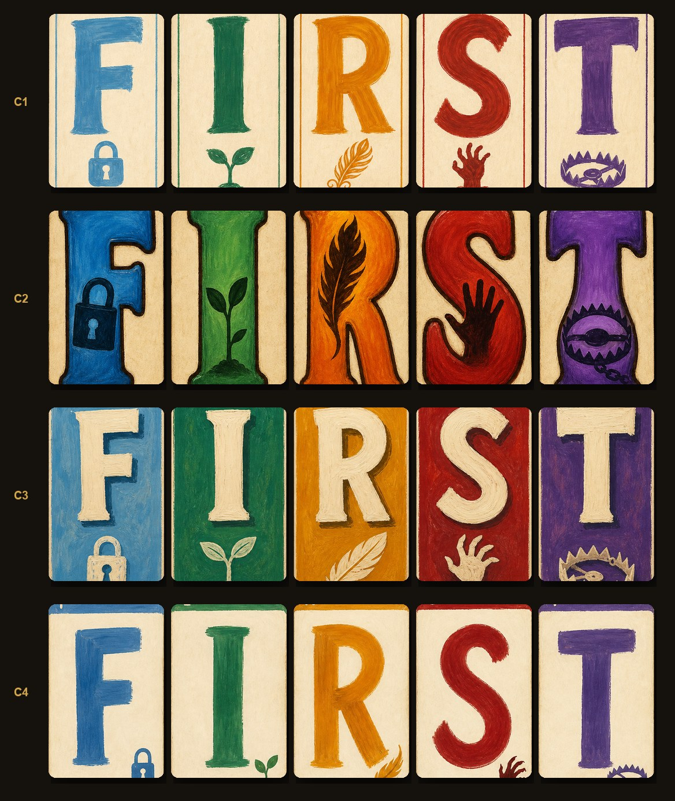<figcaption>Все варианты крупно</figcaption></figure></div>
<p><strong>Отдельное решение для судьи — как рисуется буква в игре.</strong> Архитектурный принцип проекта: текст рендерится движком шрифтом, а не запекается в картинку (i18n, чёткость). Но буква на карте — не текст, а герой: пять рукописных гуашевых литер, одинаковых в RU и EN. Предложение: <strong>буквы F I R S T запекаются в арт карты</strong> (5 ассетов), а всё остальное — ×N, счётчики, подписи — по-прежнему шрифтом. Плата: буква не масштабируется бесконечно чётко (лечится размером исходника 1024×1536) и не перекрашивается на лету (не нужно).</p></section>
<section class='v' id='C1'><div class='vhead'><span class='id'>C1</span><h2>База: гигантская буква + дудл-эмблема внизу</h2></div>
<p class='thesis'>То, что было в E1: кремовая карта, тонкий кант цвета школы, буква ~65 % высоты, маленькая эмблема под ней.</p>
<div class='shots'>
<figure>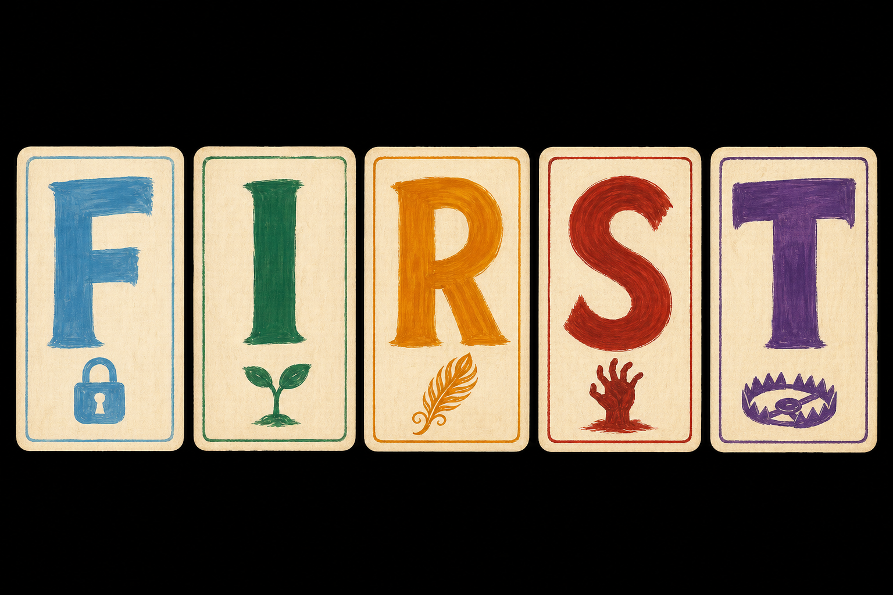<figcaption>openai/gpt-5.4-image-2 · #1 · 35.0 с · $0.043</figcaption></figure>
</div>
<div class='note'><h3>Арт-директор</h3><p>Спокойно, честно, «самодельно». Читается хорошо, но в руке из 7 при 960×540 буквы тонковаты — светлая гуашь на кремовом теряет контраст, особенно F и I. Эмблема на телефоне почти не видна (и не должна — она второстепенна). Мои баллы: П1 1.5 · П5 2.</p>
<div class='compare'><figure>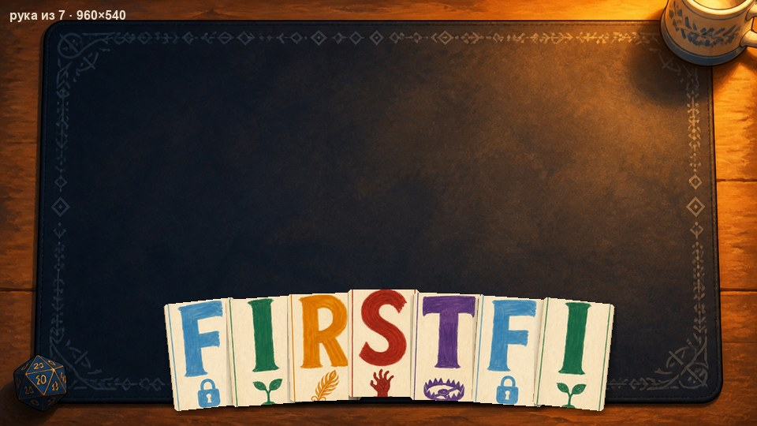<figcaption>рука из 7</figcaption></figure><figure>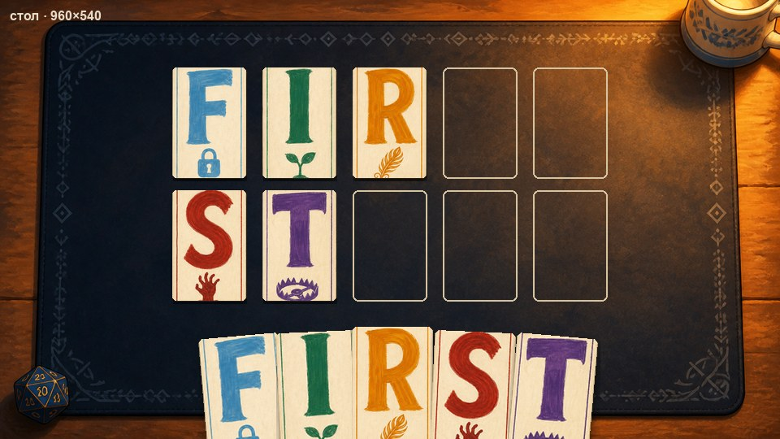<figcaption>стол</figcaption></figure><figure>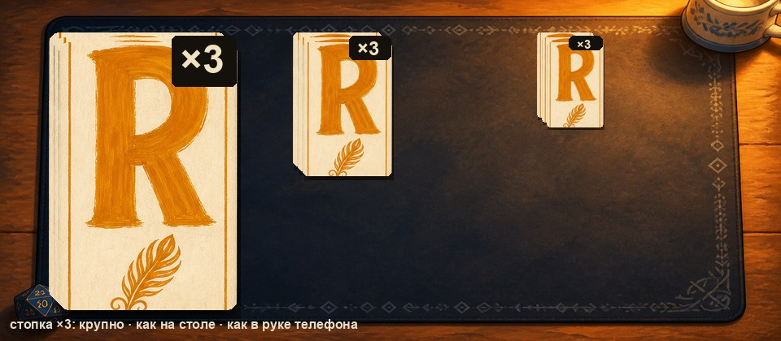<figcaption>стопка</figcaption></figure></div></div>
</section>
<section class='v' id='C2'><div class='vhead'><span class='id'>C2</span><h2>Тяжёлая буква с тёмной обводкой, эмблема внутри</h2></div>
<p class='thesis'>Буква ~75 % высоты, насыщенная гуашь, тёмная обводка, эмблема — силуэт внутри тела буквы.</p>
<div class='shots'>
<figure>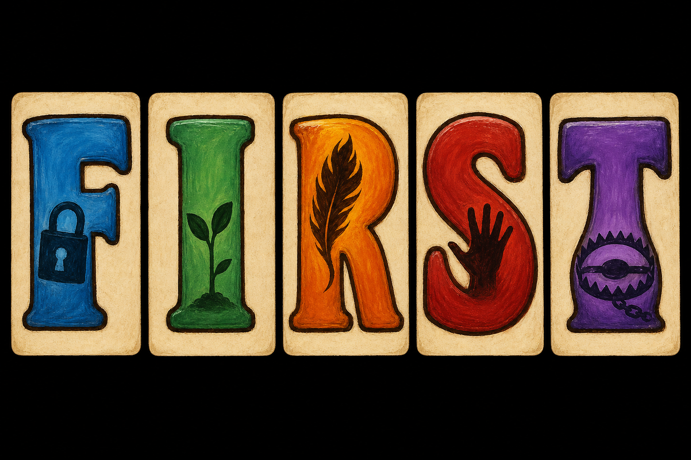<figcaption>openai/gpt-5.4-image-2 · #1 · 33.6 с · $0.043</figcaption></figure>
</div>
<div class='note'><h3>Арт-директор</h3><p>Лучший результат в тестах на 960×540: буквы читаются с любого расстояния, школа узнаётся и по цвету, и по силуэту эмблемы. Плата — карта «громче» и менее нежная, чем C1; эмблема внутри буквы местами ломает её форму (R с пером). Это можно смягчить в финальной генерации: обводку тоньше, эмблему меньше. Мои баллы: П1 2 · П5 2.</p>
<div class='compare'><figure>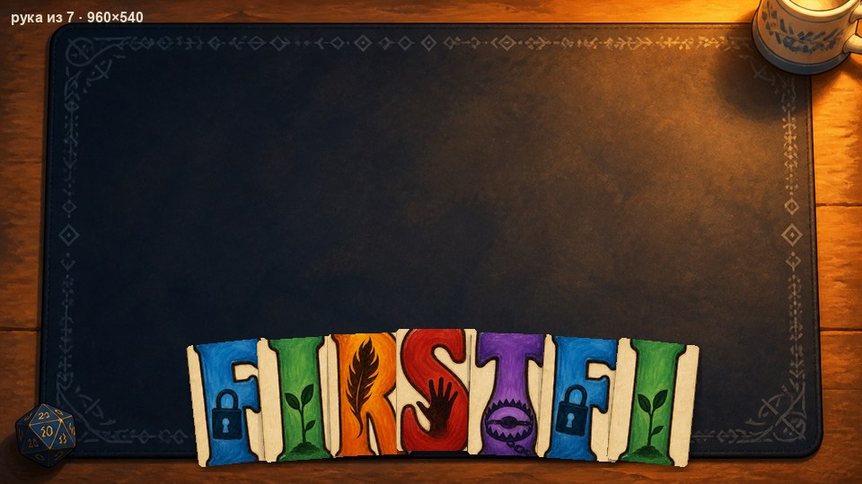<figcaption>рука из 7</figcaption></figure><figure>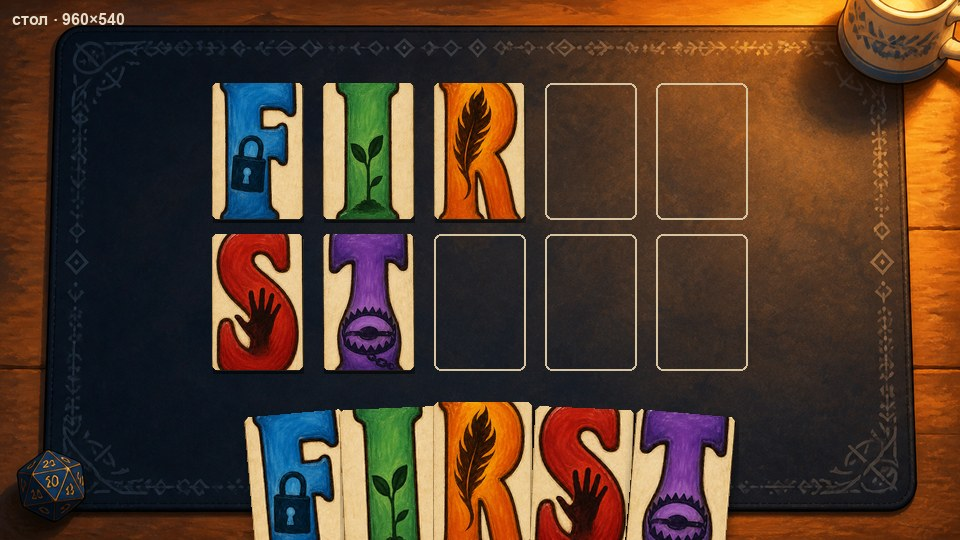<figcaption>стол</figcaption></figure><figure>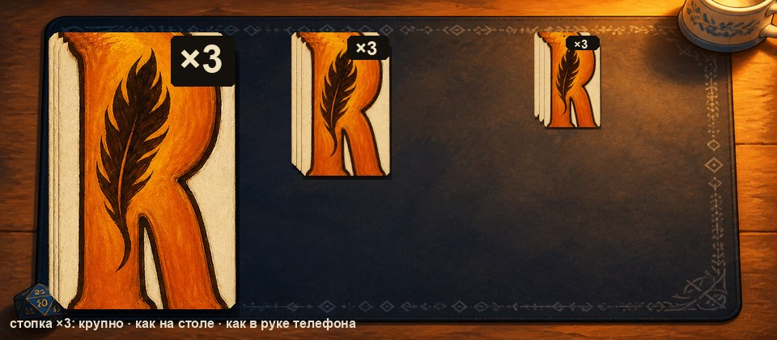<figcaption>стопка</figcaption></figure></div></div>
</section>
<section class='v' id='C3'><div class='vhead'><span class='id'>C3</span><h2>Цветное лицо школы, кремовая буква</h2></div>
<p class='thesis'>Всё лицо карты — цвет школы, буква кремовая с тенью, эмблема кремовая внизу.</p>
<div class='shots'>
<figure>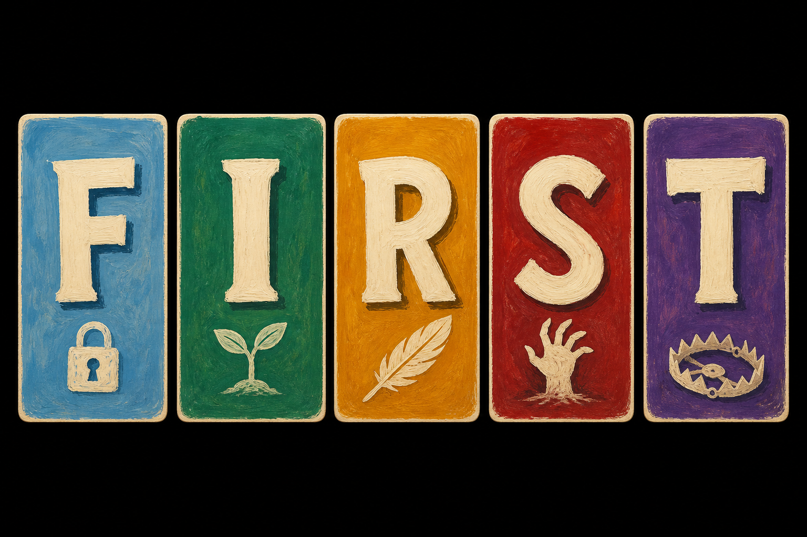<figcaption>openai/gpt-5.4-image-2 · #1 · 32.1 с · $0.020</figcaption></figure>
</div>
<div class='note'><h3>Арт-директор</h3><p>Школа узнаётся мгновенно даже по краю карты в стопке — это плюс для веера и стопок. Но буква на цвете читается хуже, чем цвет на кремовом (особенно светлые школы), а стол становится пёстрым: пять цветных пятен вместо спокойного коврика с кремовыми картами. Мои баллы: П1 1.5 · П5 1.</p>
<div class='compare'><figure>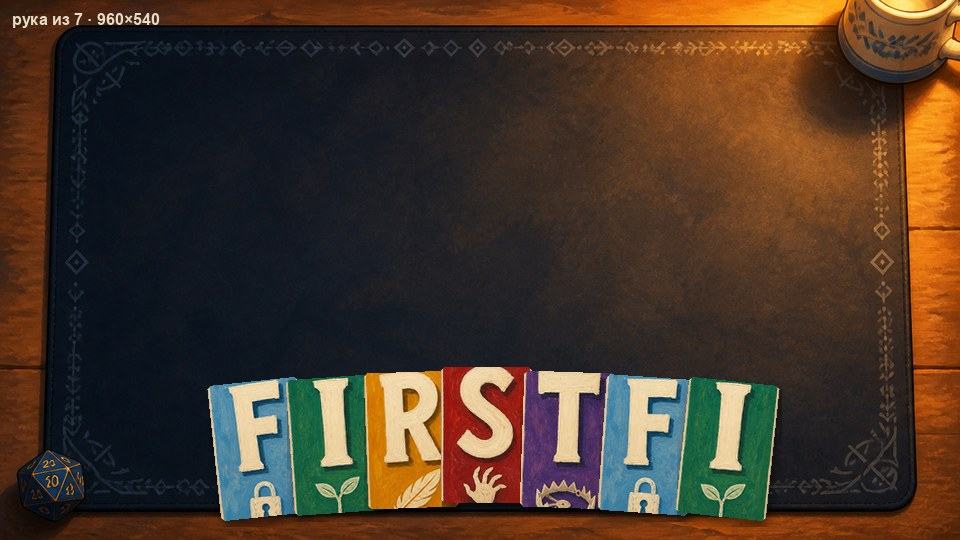<figcaption>рука из 7</figcaption></figure><figure>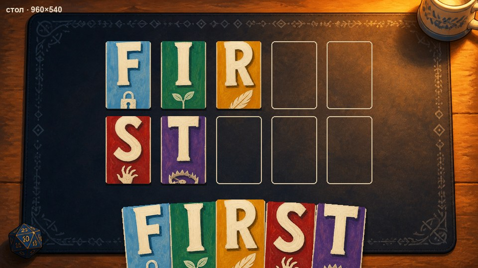<figcaption>стол</figcaption></figure><figure>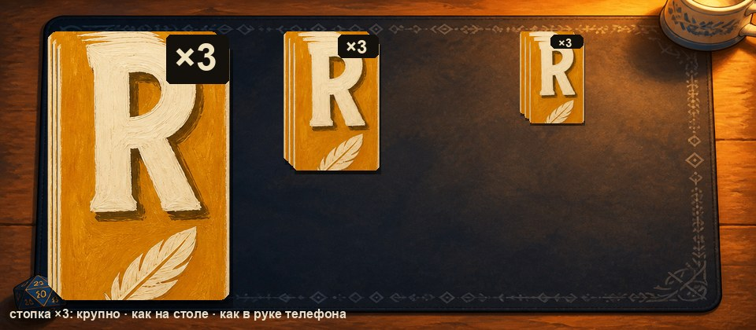<figcaption>стопка</figcaption></figure></div></div>
</section>
<section class='v' id='C4'><div class='vhead'><span class='id'>C4</span><h2>Буква во всю карту + угловой индекс</h2></div>
<p class='thesis'>Буква ~80 % высоты, цветная полоса сверху, маленький индекс буквы в углу для веера и стопок.</p>
<div class='shots'>
<figure>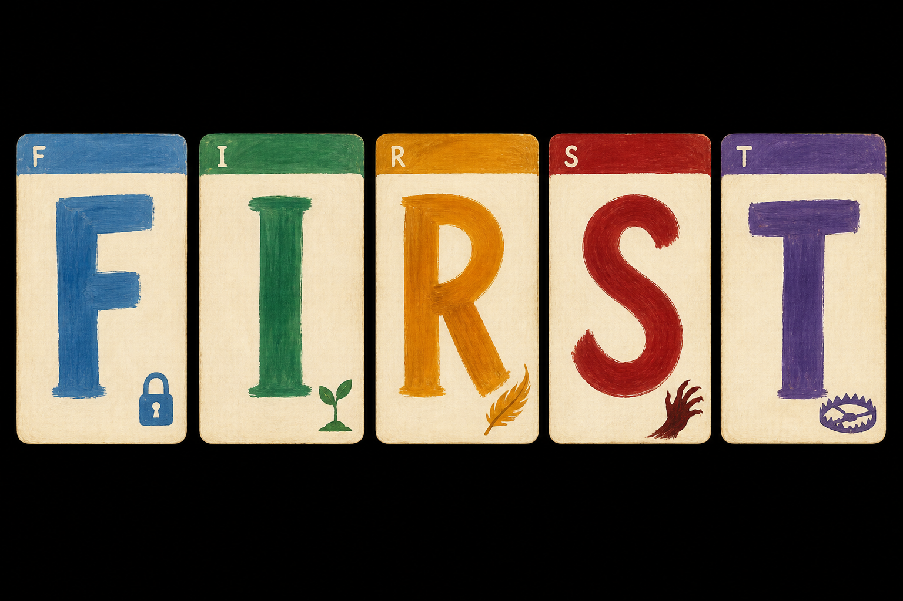<figcaption>openai/gpt-5.4-image-2 · #1 · 28.9 с · $0.020</figcaption></figure>
</div>
<div class='note'><h3>Арт-директор</h3><p>Модель не справилась с индексом (его нет), полоса срезалась при нарезке — идея угла для веера остаётся, но в таком виде вариант близок к C1 с буквой крупнее. Читаемость лучше C1, хуже C2. Мои баллы: П1 1.5 · П5 1.5.</p>
<div class='compare'><figure>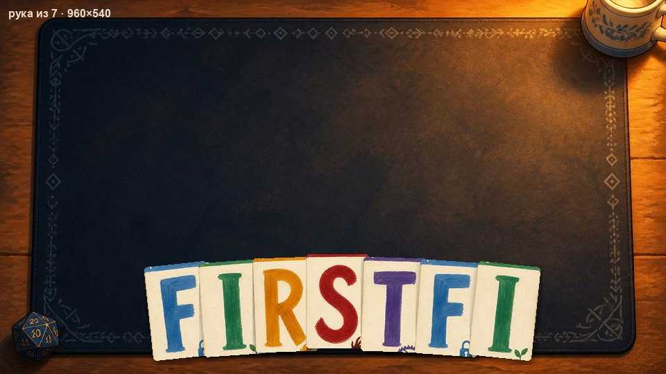<figcaption>рука из 7</figcaption></figure><figure>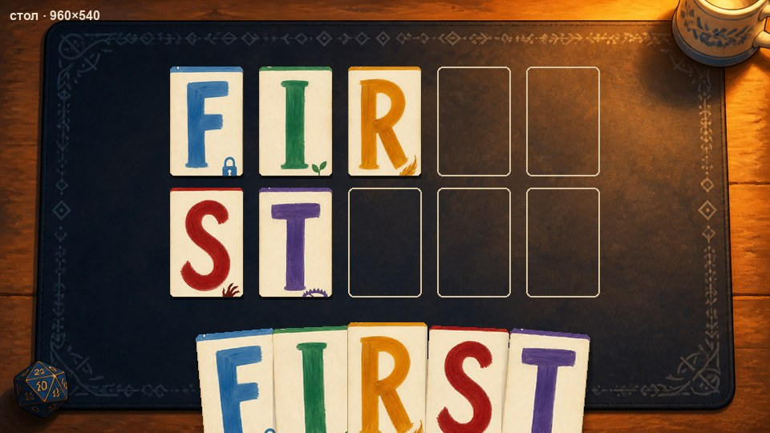<figcaption>стол</figcaption></figure><figure>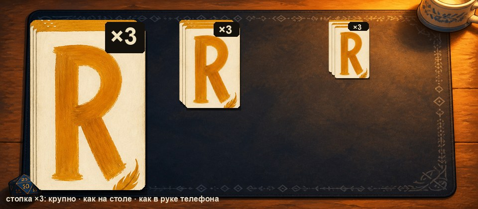<figcaption>стопка</figcaption></figure></div></div>
</section>
<section class='outro'><p><strong>Рекомендация арт-директора.</strong> <strong>C2</strong>, смягчённый: тёмная обводка тоньше (чтобы не спорить с живописью), эмблема внутри буквы меньше и не ломает форму; кремовый картон и кант из C1. Если судье C2 кажется слишком громким — <strong>C1 с более плотной, тёмной гуашью</strong> (тот же силуэт, больше контраста) — это второй по читаемости.</p>
<p><strong>Что решает судья:</strong> вариант (или гибрид: «силуэт и контраст C2, эмблема внизу как в C1»); «буквы запекаются в арт» — да/нет; и П1 0–2 по каждому варианту.</p>
<p><strong>Лист судьи</strong></p>
<div class="wrap"><table><tr><th>Вариант</th><th>П1 буква читается</th><th>П5 один мир</th><th>Нравится / отталкивает</th></tr><tr><td>C1 База</td><td></td><td></td><td></td></tr><tr><td>C2 Обводка</td><td></td><td></td><td></td></tr><tr><td>C3 Цветное лицо</td><td></td><td></td><td></td></tr><tr><td>C4 Во всю карту</td><td></td><td></td><td></td></tr></table></div></section>
</main>